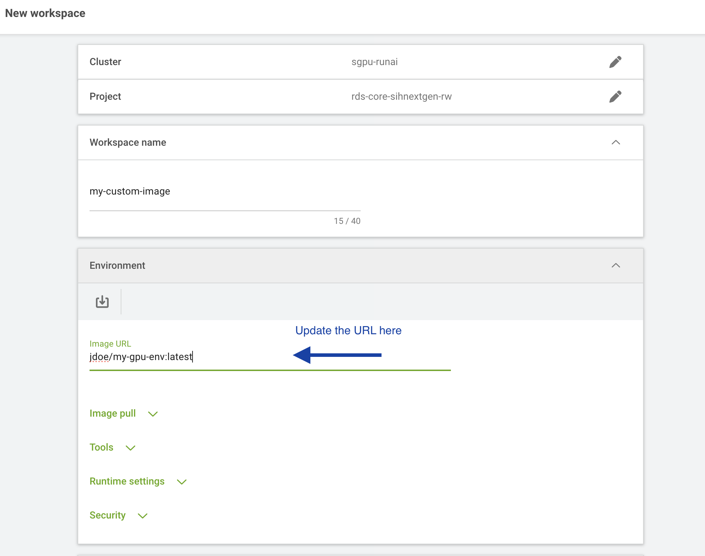

Tutorial: Building and Using a Custom Docker Image
This tutorial walks you through building a custom Docker image based on the SIH DGX base image, pushing it to Docker Hub, and using it to launch a Jupyter Lab workload on the SIH GPU cluster. This is useful when you need a personalised compute environment — for example, to pre-install packages, set up specific library versions, or include your own tools — while still being able to use Jupyter Lab as your interactive front end.
If you are new to workloads and Jupyter Lab on the cluster, read Tutorial: Running a Jupyter Lab Workload first.
The exact steps in this tutorial may not cover every use case. Depending on the application you are building, you may need to adjust the Dockerfile, the environment configuration, or other workload settings.
The GPU cluster base image (sydneyinformaticshub/dgx-interactive-jupyterlab) will be updated from time to time. If you are unsure how to proceed or run into issues, please reach out to the SIH team for assistance.
Prerequisites
Before starting, make sure you have:
- Docker installed on your local machine
- A free Docker Hub account
- Basic familiarity with the terminal
Step 1: Write a Dockerfile
Create a new directory for your project and create a file named Dockerfile inside it. Start FROM the SIH DGX base image sydneyinformaticshub/dgx-interactive-jupyterlab, which already has Jupyter Lab and common data science packages (TensorFlow, PyTorch, pandas, ollama) installed.
FROM sydneyinformaticshub/dgx-interactive-jupyterlab:latest
ENV PACKAGES="package1 \
package2"
RUN apt-get update && apt-get install -y $PACKAGES
# Create a separate requirements.txt file in the same folder with a list of python packages to install
COPY requirements.txt .
RUN pip install -r requirements.txtReplace the RUN line with whatever packages or configuration your environment requires. You can add multiple RUN instructions, copy in files, or set environment variables — refer to the Docker documentation for the full Dockerfile syntax.
During the image build process you have full sudo (root) access inside the container, so you can install system-level packages with apt-get or make other privileged changes. This flexibility is not available when running the container on the SIH GPU cluster, where sudo is disabled for security reasons. Any system-level setup should therefore be done here in the Dockerfile, not at runtime.
Step 2: Build the image
From the directory containing your Dockerfile, run:
docker build -t <your-dockerhub-username>/<image-name>:<tag> .For example:
docker build -t jdoe/my-gpu-env:latest .The build may take several minutes depending on the packages you are installing. Once complete, verify the image was created:
docker imagesStep 3: Push the image to Docker Hub
Log in to Docker Hub from the terminal:
docker loginEnter your Docker Hub username and password when prompted. Then push the image:
docker push <your-dockerhub-username>/<image-name>:<tag>For example:
docker push jdoe/my-gpu-env:latestOnce the push completes, the image will be publicly accessible at <your-dockerhub-username>/<image-name>:<tag>.
Docker Hub free accounts allow unlimited public repositories. Make sure your repository visibility is set to Public so the cluster can pull it without authentication.
Step 4: Launch a Jupyter Lab workload with your custom image
You can now use your custom image on the SIH GPU cluster by following the Tutorial: Running a Jupyter Lab Workload, with one change in Step 2: when selecting the Environment, choose the jupyter-notebook environment as usual, then replace the pre-filled image URL with the full path to your custom image (e.g. jdoe/my-gpu-env:latest).

All other steps remain the same. Because your image is built on top of sydneyinformaticshub/dgx-interactive-jupyterlab, the Jupyter Lab server will start automatically, and you will be able to connect via Jupyter under “CONNECT” once the workload is running — with your custom packages and configuration available inside the session.
Future maintenance: updating your image
If you need to add or change packages in the future, update your Dockerfile and repeat Steps 2 and 3 to rebuild and push the updated image. We recommend incrementing the tag each time (e.g. v1, v2) so you can track versions and roll back if needed. The next workload you launch using that image name will automatically pull the latest version.